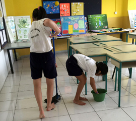
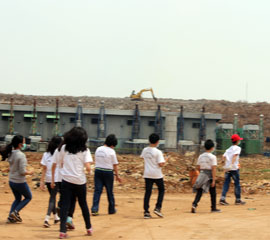
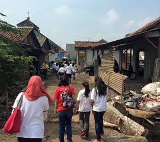

ScienceMission: To arouse students’ natural curiosity, help them develop
the right attitude towards their environment and to bring out the true
scientist in every student.
Science in the Learning Gardens and Pond
The different garden pockets and pond in the school serve both aesthetic
and educational purposes. With the greenery around the school, it is
common that students get to spot some ‘visitors’ in the gardens like
butterflies, caterpillars, moths, birds and lizards.
The Learning Gardens and the Pond are the living laboratories where our
students can relate and interact with nature instead of just learning
about nature through textbooks or internet. Students also get the
opportunities to observe a large variety of organisms in the gardens and
pond to understand concepts they learn in Life Science lessons –
diversity, cycles, system, reproduction of plants and animals.
Real-life observation data are collected for investigations making
learning meaningful.
Learning Journeys
The purpose of these journeys is to engage students in learning through
authentic experiences beyond the classroom. Our students have been to
places such as organic garden in Bogor, Taman Safari, Taman Mini
Indonesia Indah, rain forest in Cibodas, PP IPTEK (Science Centre),
Bogor Botanic Garden, Sanitary Land Fill, and some other relevant places
including visit to various science related sites in Singapore.
These learning journeys have opened the minds of our students to become
more aware of their environment and learn to apply Science concepts and
ethics to real life situations around them. They have learned to work
collaboratively in teams and develop thinking skills.
Respect, Save and Value our Planet
Science Department supports and strives to inculcate Respect for our
environment through conservation of resources by Reducing, Reusing and
Recycling. Campaigns are implemented to raise awareness for
environmental issues such as littering, mosquito breeding, saving water
and energy and encouraging everyone, including the school-home
neighbourhood to take part in keeping Jakarta clean and green.
|

|

|
|

|

|
|
|